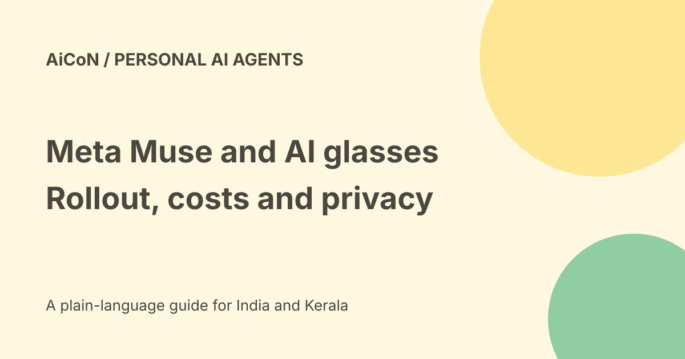

Meta Muse and AI glasses: rollout, prices and privacy
At Connect 2026, Meta said it is working to bring its Muse personal AI agent to AI glasses. The official 23 September post describes plans, not a verified rollout to every glasses owner. Current help pages still describe limited testing and availability that differs by account and location.

What Muse is meant to do
Meta describes Muse as a personal agent that can answer questions, remember ongoing work and act through connected apps and services.
Its glasses announcement gives examples such as workouts, meal logging, appointment booking and flight-price research. Those are described capabilities and plans, not tasks we completed or a guarantee for every region.
Glasses access is not established
The announcement says Meta is working on bringing Muse to glasses. It describes activating the agent by name and having it work in the background.
We did not pair glasses, test wake words or verify an Indian glasses rollout. Do not buy hardware on the assumption that this announced integration is already enabled for you.
India and limited testing
Meta's 29 September small-business announcement explicitly describes personal Muse as available in the US and Canada. That updates the archive's US-only launch wording. Account-level testing and plan limits still apply; it is not an India launch statement.
Meta's current subscription help says Muse and subscriptions are in limited testing and not available in all locations. Benefits vary by region and account.
The checked pages did not supply a complete country list or an India launch date. This guide therefore does not convert the archive's US-first wording into a claim that all US accounts work or that India is definitely available.
Public website versus logged-in access
The live browser reached the Muse-branded sign-in page, which describes a cloud computer and mobile, Mac and WhatsApp use. We did not enter an email, phone number or account.
A separate automated fetch of the same domain returned unrelated video-hosting branding. The browser result identifies the page inspected for this guide; readers should check current branding and terms before submitting any login information. A public login page does not prove account eligibility.
Free limits and paid plans
Meta's help says free access has a usage limit. Paid weekly allowances increase by plan:
| Plan | Published monthly price | Approximate INR | Weekly allowance |
|---|---|---|---|
| Power | $20 | Rs 1,929 | 500 million Muse tokens |
| Maximum | $100 | Rs 9,647 | 3 billion Muse tokens |
Estimates use Wise's Rs 96.47/USD mid-market rate checked on 7 October 2026. They exclude taxes and conversion charges and are not an Indian purchase offer. Muse tokens are its own usage measure, not a promise of that many tasks or words.
Help says subscriptions renew monthly unless cancelled. Review local eligibility, final price, usage and renewal before subscribing. No subscription or payment was made here.
Cloud VM does not mean private even from Meta
Meta's security help describes an isolated per-user virtual machine, with backups. It says a Muse Confidential VM designed to keep information private even from Meta is a future option.
Do not conflate the current isolated VM with that future confidential environment. Isolation from other users and confidentiality from the service operator are different claims.
What Reuters reported about human phone calls
Reuters reported on 22 September 2026 that Meta tested a human-concierge option for Muse, with contractors handling some calls. The report says it was enabled for half of Meta's employees and could be opted out of. This was an employee test, not proof that every public Muse call was handled by a person.
The same report says Meta rolled back the feature after concerns about disclosure and sensitive information. A spokesperson said the potential feature would only roll out when ready and with proper disclosures. We have not verified a later public rollout. It would be misleading to repeat the launch headline as a claim that contractors currently handle all calls.
Before using any calling feature for private errands, check whether a person may hear or handle the request, what information they receive and how call records are kept. A cloud-computer security claim does not answer that separate human-access question.
Training controls matter
Meta's help says the setting to use Muse interactions for model improvement is on at first use. Users can change it under Settings, Data controls. The help says the change also applies to previous interactions.
The same page says Muse conversations and VM data are not shared with Meta ad systems. That is not a claim that the service keeps no data or has no other processing.
Connectors and action approval
Connecting email, calendars or third-party services can give an agent access to sensitive records and the ability to act. Meta describes a secure credentials store and separate checks for connected services and permitted actions.
It says certain important actions, such as email and purchases, request confirmation, with requirements varying by action, connector and selected defaults. That is narrower than saying a named safety agent approves every possible internet interaction.
How to evaluate without overgranting
- Read current availability and privacy terms.
- Check the training setting before sharing private work.
- Start with a harmless task and minimal access.
- Inspect each connector's read and write permissions.
- Review actual recipients, amounts and changes before approval.
- Check the activity record and final result.
- Remove access you no longer need.
What changed since the original post?
We distinguish planned glasses integration from current account access, replace broad free wording with usage limits and paid plans, and separate today's VM from a future confidential VM. Named security machinery in an old post is not treated as a blanket safety guarantee.
Frequently asked questions
Is glasses access verified in India?
No.
Is Muse unlimited for free?
No. Meta describes a free usage limit.
Is its current VM private even from Meta?
The confidential-VM option is described as future, not established here.
Sources: Official Muse glasses announcement · Official privacy and security help · Official subscription terms and plans · Browser-inspected Muse public page · INR reference rate. Checked 7 October 2026. · Reuters on employee human-concierge test and rollback · Official US/Canada statement,29September